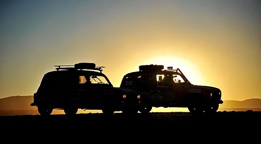

4L TROPHY | 4L BLONDIES
Le Rallye du 4L TROPHY est un raid automobile solidaire destiné aux étudiants entre 18 et 28 ans.
Il a été créé en 1997 par un ancien participant du Paris-Dakar, Jean-Jacques REY.
C’est une formidable aventure humaine, sportive et solidaire pour les étudiants.
Ici, il n’est pas question de vitesse, mais d’orientation pour l’emporter.
Relever le défi, c’est d’abord franchir la ligne d’arrivée.
Pour y parvenir les participants découvriront la pleine dimension du mot entraide pour déjouer les différents pièges
(le sable dans lequel il sera très facile de s’ensabler) ou encore dépanner une autre équipe victime de problèmes
mécaniques. En ligne de mire, Marrakech, la destination finale d’un périple de 10 jours et près de 6 000 kilomètres
sur les routes de France, d’Espagne et du Maroc. Tous ces éléments font du 4L Trophy le plus grand raid étudiant d’Europe.
En plus de leur soif de grands espaces, les équipages embarquent à bord de leurs 4L du matériel destiné aux enfants les
plus démunis du Maroc, en partenariat avec l’association « Enfants du désert ». De plus, l’association « 4L Solidaire »
en partenariat avec l’association nationale de la Croix-Rouge Française propose aux participants d’apporter 10 Kg de
denrées alimentaires non-périssables par équipages. Depuis 2011 chaque année, ce sont environ 12 tonnes de dons, soit
près de 24 000 repas par an qui ont pu être distribués à des personnes défavorisées.
Enfin, cette aventure permettra également, de lever des fonds qui seront reversés à l’association des Enfants du Désert.
